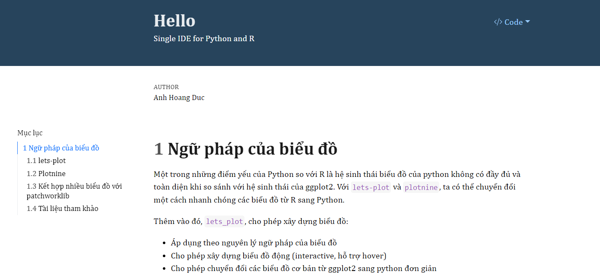

2. Jupyter lab
2.1. Giới thiêu
Jupyter Notebook là IDE phổ biến nhất cho Python, Jupyter Notebook sử dụng browser-based interface, cho phép chúng ta hiển thị code, hình ảnh, bảng biểu… và viết note bằng Markdown - tương tự như RMarkdown. Tiếp tục với sự phát triển của Jupyeter Notebook là jupyter lab.
Cách cài đặt jupyter như sau
pip install jupyterlab
Các phím tắt hay sử dụng:
Quay về edit mode:
EscHiển thị các phím tắt:
Ctrl + Shift + PInsert cell phía trên/ dưới:
Esc + A,Esc + BChạy code:
Ctrl + EnterChạy code & chuyển xuống cell dưới:
Shift + EnterChuyển sang markdown, heading, raw:
Esc + 1,Esc + 2,Esc + M,Esc + RChuyển về code:
Esc + YCut code:
Esc + XComment/Uncomment:
Ctrl + /Chạy code & Insert below:
Alt + EnterShift + Enter: run cell, move xuống dưới 1 dòngAlt + Enter: run cell, insert 1 dòng phía dướiUp/ Down: di chuyển lên xuốngEnter: edit 1 cellEsc D+D: xóa 1 cell (nhớ tắt tiếng Việt)Esc + Z: undoEsc + S: saveCtrl + Shift + -: Tách 1 cell thành 2 cell từ vị trí đặt con trỏ
2.1.1. Cách hiển thị biểu đồ trong jupyer
Sử dụng option %matplotlib inline với jupyter
[1]:
# %matplotlib inline
import matplotlib.pyplot as plt
plt.plot([1,2,3,4])
plt.ylabel('some numbers')
plt.show()
2.1.2. Magic commands
Trong Python có nhóm các câu lệnh được define sẵn được gọi là magic command. Các câu lệnh này cho phép thực hiện nhanh các nhóm lệnh khác.
[2]:
#| eval: false
%lsmagic
[2]:
Available line magics:
%alias %alias_magic %autoawait %autocall %automagic %autosave %bookmark %cd %clear %cls %code_wrap %colors %conda %config %connect_info %copy %ddir %debug %dhist %dirs %doctest_mode %echo %ed %edit %env %gui %hist %history %killbgscripts %ldir %less %load %load_ext %loadpy %logoff %logon %logstart %logstate %logstop %ls %lsmagic %macro %magic %mamba %matplotlib %micromamba %mkdir %more %notebook %page %pastebin %pdb %pdef %pdoc %pfile %pinfo %pinfo2 %pip %popd %pprint %precision %prun %psearch %psource %pushd %pwd %pycat %pylab %qtconsole %quickref %recall %rehashx %reload_ext %ren %rep %rerun %reset %reset_selective %rmdir %run %save %sc %set_env %store %sx %system %tb %time %timeit %unalias %unload_ext %who %who_ls %whos %xdel %xmode
Available cell magics:
%%! %%HTML %%SVG %%bash %%capture %%cmd %%code_wrap %%debug %%file %%html %%javascript %%js %%latex %%markdown %%perl %%prun %%pypy %%python %%python2 %%python3 %%ruby %%script %%sh %%svg %%sx %%system %%time %%timeit %%writefile
Automagic is ON, % prefix IS NOT needed for line magics.
Các magic command thường dùng
[3]:
#| eval: false
# Project working directory
%pwd
[3]:
'D:\\01-github\\ds-book-python\\_source'
[4]:
#| eval: false
# Current directory in in Python
%cd
C:\Users\Hoang Duc Anh
C:\Users\Hoang Duc Anh\AppData\Local\Programs\Python\Python311\Lib\site-packages\IPython\core\magics\osm.py:393: UserWarning: using bookmarks requires you to install the `pickleshare` library.
bkms = self.shell.db.get('bookmarks', {})
C:\Users\Hoang Duc Anh\AppData\Local\Programs\Python\Python311\Lib\site-packages\IPython\core\magics\osm.py:428: UserWarning: using dhist requires you to install the `pickleshare` library.
self.shell.db['dhist'] = compress_dhist(dhist)[-100:]
[5]:
#| eval: false
%ls
Volume in drive C is OS
Volume Serial Number is F8BB-E198
Directory of C:\Users\Hoang Duc Anh
05/05/2024 09:59 PM <DIR> .
04/24/2024 07:57 PM <DIR> ..
01/06/2023 10:33 PM <DIR> .aws
11/26/2023 02:49 PM 1,338 .bash_history
04/24/2024 07:58 PM <DIR> .cache
05/26/2023 09:59 PM <DIR> .conda
01/17/2024 10:41 PM <DIR> .eclipse
03/04/2023 02:24 PM 188 .gitconfig
04/27/2024 08:32 PM <DIR> .ipynb_checkpoints
05/25/2023 09:54 PM <DIR> .ipython
11/27/2023 05:11 AM <DIR> .jupyter
05/25/2023 09:52 PM <DIR> .matplotlib
09/27/2023 09:52 PM 1,492 .python_history
06/03/2023 09:36 PM <DIR> .spyder-py3
04/14/2023 06:34 AM <DIR> .ssh
09/08/2023 09:22 PM <DIR> .streamlit
08/19/2023 05:13 PM <DIR> .vscode
09/04/2023 09:22 PM <DIR> anaconda3
08/18/2022 10:24 PM 72,380 battery-report.html
09/04/2023 09:54 PM 171,163 benefits.pdf
10/01/2022 11:01 PM <DIR> Contacts
09/06/2023 08:48 PM 24,652 docstore.json
05/25/2023 09:41 PM <DIR> Documents
05/06/2024 05:17 PM <DIR> Downloads
10/01/2022 11:01 PM <DIR> Favorites
09/06/2023 08:48 PM 18 graph_store.json
09/06/2023 08:48 PM 667 index_store.json
10/01/2022 11:01 PM <DIR> Links
10/01/2022 11:01 PM <DIR> Music
04/10/2022 04:00 PM <DIR> OneDrive
10/01/2022 11:01 PM <DIR> Pictures
10/01/2022 11:01 PM <DIR> Saved Games
02/08/2023 10:18 AM <DIR> Searches
04/27/2024 04:53 PM 10,454 Untitled.ipynb
04/28/2024 07:17 AM 957,036 Untitled1.ipynb
04/27/2024 08:44 PM 5,728 Untitled2.ipynb
09/06/2023 08:48 PM 172,587 vector_store.json
04/26/2024 08:15 PM <DIR> Videos
12 File(s) 1,417,703 bytes
26 Dir(s) 36,906,356,736 bytes free
2.1.3. Viết công thức toán
Ta có thể viết công thức toán như rmarkdown thông thường.
2.1.4. Cài đặt extension cho phép quản lý jupyter tốt hơn
conda install -c conda-forge jupyter_contrib_nbextensions jupyter_nbextensions_configurator
Vào Nbextension
Chọn options table of contents
Chọn các parameters
Cài đặt khi bị chặn proxy:
Làm theo hướng dẫn tại https://github.com/ipython-contrib/jupyter_contrib_nbextensions
2.1.5. Thay đổi working directory
Khi cài đặt Anaconda, lưu ý chọn option cho phép cài đặt PATH vào environment như hướng dẫn tại link
Nếu quên không cài, cần thực hiện câu lệnh sau trên CMD
SETX PATH "%PATH%;C:\Users\Admin\Anaconda3\Scripts; C:\Users\Admin\Anaconda3"
Sau đó, đặt file .bat tại thư mục chứa các notebook đang lưu, thực hiện như sau:
rem dir jupyter notebook
2.2. Quarto
Tương tự như R, quarto có thể sử dụng cùng .ipynb. Khi đặt heading của quarto phần đầu của notebook, ta chọn cell ở chế độ raw
Để export file .ipynb thành html, ta dùng cmd như sau
quarto render notebook.ipynb
Kết quả render ra file html như sau
Như vậy, khi ta dùng kết hợp notebook và export ra quarto, ta có thể sử dụng đồng nhất kết quả đầu ra của cả 2 ngôn ngữ R & Python
2.3. Sphinx
Mặc dù jupyter notebook là công cụ hữu hiệu để phân tích dữ liệu với Python, jupyter lại chưa phải là công cụ hữu hiệu để viết lại các document thành hệ thống. Để viết hiệu quả, ta cần dùng sphinx
# Cài đặt sphinx
pip install Sphinx
# Cài đặt template
pip install sphinx_rtd_theme
# Cài đặt notebook for sphinx
conda install -c conda-forge nbsphinx
Sau khi cài đặt xong, ta có thể tạo 1 project mới như sau
sphinx-quickstart
Các file notebook cần được liệt kê trong file index.rst
Sau khi set-up xong, toàn ta có thể run toàn bộ project như sau
sphinx-build source_foder output_folder
sphinx-build _source _build/html